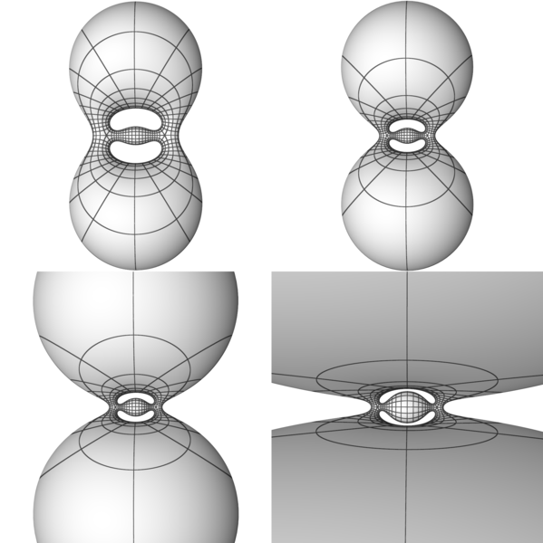

The Lawson minimal surfaces ξg,1 in various stereographic projections.
The Lawson minimal surface ξ6,1.Two projections of the Lawson minimal surfaces ξg,1 with genus g=2, 3, 4, 5, 6.The Lawson minimal surfaces ξg,1 in S3 of genus g=2, 3, 4, 5. The surfaces are steregraphically projected from S3 to R3 with curvature lines.Family of CMC surfaces of genus 2 in S3, starting at the Lawson surface (upper left). As the necks shrink as the lobes expand, the surfaces converge to a double covered minimal sphere as singular limit.A family of CMC surfaces in S3 of genus 2. This stereographic projection exposes their Z3 symmetry. Unlike family I, this family is not connected to the Lawson minimal surface ξ2,1, The flow is conjectured to limit to a necklace of three CMC spheres (lower right) as the conformal type degenerates. }

Another stereographic projection of genus 2 CMC surfaces. In this view, the flow can be seen to mimic that of the 2-lobe Delaunay tori, but with a piece of a Delaunay cylinder glued in.Genus 2 CMC surfaces with five and six lobes.